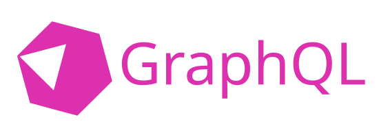

GraphQL server library for Crystal.
- Boilerplate-free: Schema generated at compile time
- Type-safe: Crystal guarantees your code matches your schema
- High performance: See benchmarks
Getting Started
Install the shard by adding the following to our shard.yml:
dependencies:
graphql:
github: graphql-crystal/graphqlThen run shards install.
The first step is to define a query object. This is the root type for all queries and it looks like this:
require "graphql"
@[GraphQL::Object]
class Query < GraphQL::BaseQuery
@[GraphQL::Field]
def hello(name : String) : String
"Hello, #{name}!"
end
endNow we can create a schema object:
schema = GraphQL::Schema.new(Query.new)To verify we did everything correctly, we can print out the schema:
puts schema.document.to_sWhich, among several built-in types, prints our query type:
type Query {
hello(name: String!): String!
}To serve our API over HTTP we call schema.execute with the request parameters and receive a JSON string. Here is an example for Kemal:
post "/graphql" do |env|
env.response.content_type = "application/json"
query = env.params.json["query"].as(String)
variables = env.params.json["variables"]?.as(Hash(String, JSON::Any)?)
operation_name = env.params.json["operationName"]?.as(String?)
schema.execute(query, variables, operation_name)
endNow we're ready to query our API:
curl \
-X POST \
-H "Content-Type: application/json" \
--data '{ "query": "{ hello(name: \"John Doe\") }" }' \
http://0.0.0.0:3000/graphqlThis should return:
{ "data": { "hello": "Hello, John Doe!" } }For easier development, we recommend using GraphiQL. A starter template combining Kemal and GraphiQL is found at examples/graphiql.
Context
context is a optional argument that our fields can retrieve. It lets fields
access global data, like database connections.
# Define our own context type
class MyContext < GraphQL::Context
@pi : Float64
def initialize(@pi)
end
end
# Pass it to schema.execute
context = MyContext.new(Math::PI)
schema.execute(query, variables, operation_name, context)
# Access it in our fields
@[GraphQL::Object]
class MyMath < GraphQL::BaseObject
@[GraphQL::Field]
def pi(context : MyContext) : Float64
context.pi
end
endContext instances must not be reused for multiple executions. A subscription
is one execution: the context passed to schema.subscribe lives for the whole
subscription and every event is resolved with it.
Concurrency
By default, a query is resolved sequentially in the fiber that called
schema.execute. To resolve fields and array elements concurrently, set
max_concurrency on the context:
context = MyContext.new(Math::PI)
context.max_concurrency = 8
schema.execute(query, variables, operation_name, context)This is the maximum number of fibers a single execution may have running at once. When the budget is used up, remaining work runs inline, so a large list never fans out into an unbounded number of fibers. Choose a value your downstream resources can sustain; resolvers that check out database connections should stay below the connection pool size.
Complexity
To reject operations that select too many fields, set max_complexity on the
context:
context = MyContext.new(Math::PI)
context.max_complexity = 200
schema.execute(query, variables, operation_name, context)Complexity is the number of fields the operation selects, counted across the
whole selection tree with fragments expanded. It is computed before any
resolver runs, and an operation over the limit is answered with an error and
no data. After execution, context.complexity holds the count.
Nesting depth is limited separately. Selection sets, lists and input objects
may nest max_depth levels, 100 by default, and a deeper query is rejected
while parsing. Real queries rarely pass twenty levels; the limit exists so a
hostile query cannot exhaust the stack:
context.max_depth = 30Benchmarking
bench/bench.cr runs realistic requests against a schema with an interface, a
union, an enum, an input object and nesting, and reports throughput per
scenario. Run it before and after a change, on the same machine, and compare:
crystal run --release bench/bench.cr -- --json /tmp/before.json
# make your changes
crystal run --release bench/bench.cr -- --compare /tmp/before.json--only NAME runs one scenario and --seconds N changes the time budget per
scenario. Every response is checked for errors before timing starts.
Objects
Objects are perhaps the most commonly used type in GraphQL. They are implemented
as classes. To define a object, we need a GraphQL::Object annotation and to inherit
GraphQL::BaseObject. Fields are methods with a GraphQL::Field annotation.
@[GraphQL::Object]
class Foo < GraphQL::BaseObject
# type restrictions are mandatory on fields
@[GraphQL::Field]
def hello(first_name : String, last_name : String) : String
"Hello #{first_name} #{last_name}"
end
# besides basic types, we can also return other objects
@[GraphQL::Field]
def bar : Bar
Bar.new
end
end
@[GraphQL::Object]
class Bar < GraphQL::BaseObject
@[GraphQL::Field]
def baz : Float64
42_f64
end
endFor simple objects, we can use instance variables:
@[GraphQL::Object]
class Foo < GraphQL::BaseObject
@[GraphQL::Field]
property bar : String
@[GraphQL::Field]
getter baz : Float64
def initialize(@bar, @baz)
end
endQuery
Query is the root type of all queries.
@[GraphQL::Object]
class Query < GraphQL::BaseQuery
@[GraphQL::Field]
def echo(str : String) : String
str
end
end
schema = GraphQL::Schema.new(Query.new)Mutation
Mutation is the root type for all mutations.
@[GraphQL::Object]
class Mutation < GraphQL::BaseMutation
@[GraphQL::Field]
def echo(str : String) : String
str
end
end
schema = GraphQL::Schema.new(Query.new, Mutation.new)Input Objects
Input objects are objects that are used as field arguments. To define an input
object, use a GraphQL::InputObject annotation and inherit GraphQL::BaseInputObject.
It must define a constructor with a GraphQL::Field annotation.
@[GraphQL::InputObject]
class User < GraphQL::BaseInputObject
getter first_name : String?
getter last_name : String?
@[GraphQL::Field]
def initialize(@first_name : String?, @last_name : String?)
end
endEnums
Defining enums is straightforward. Just add a GraphQL::Enum annotation:
@[GraphQL::Enum]
enum IPAddressType
IPv4
IPv6
endScalars
The following scalar values are supported:
Int32<->IntFloat64<->FloatString<->StringBool<->BooleanGraphQL::Scalars::ID<->String
Built-in custom scalars:
GraphQL::Scalars::BigInt<->String
Custom scalars are created by implementing from_json/to_json:
@[GraphQL::Scalar]
class ReverseStringScalar < GraphQL::BaseScalar
@value : String
def initialize(@value)
end
def self.from_json(string_or_io)
self.new(String.from_json(string_or_io).reverse)
end
def to_json(builder : JSON::Builder)
builder.scalar(@value.reverse)
end
endA custom scalar's to_json is rendered into a buffer, so an exception in it
only affects that field. The library's built-in scalars are written straight
into the response instead; if you reopen one of them and its to_json raises,
the enclosing object becomes null and the error is reported there.
Interfaces
An interface is an abstract class or a module with a GraphQL::Interface
annotation. Its fields are GraphQL::Field methods, abstract or not. Objects
that inherit from the class or include the module implement the interface,
and fields may return the interface type:
@[GraphQL::Interface]
abstract class Character < GraphQL::BaseObject
@[GraphQL::Field]
abstract def name : String
end
@[GraphQL::Object]
class Human < Character
@[GraphQL::Field]
def name : String
"Luke"
end
@[GraphQL::Field]
def home_planet : String
"Tatooine"
end
end
@[GraphQL::Object]
class Query < GraphQL::BaseQuery
@[GraphQL::Field]
def hero : Character
Human.new
end
endEvery object implementing an interface is part of the schema as soon as the
interface is. Fields specific to one implementation are selected through
fragments with a type condition, and __typename reports the concrete type:
{
hero {
__typename
name
... on Human {
homePlanet
}
}
}Unions
A union is a module with a GraphQL::Union annotation. Objects that include
the module are its member types. A union has no fields of its own, so
selections on it must go through type conditions:
@[GraphQL::Union]
module SearchResult
end
@[GraphQL::Object]
class Human < GraphQL::BaseObject
include SearchResult
# ...
end
@[GraphQL::Object]
class Starship < GraphQL::BaseObject
include SearchResult
# ...
end
@[GraphQL::Object]
class Query < GraphQL::BaseQuery
@[GraphQL::Field]
def search(text : String) : Array(SearchResult)
[Human.new, Starship.new] of SearchResult
end
end{
search(text: "a") {
__typename
... on Human { name }
... on Starship { length }
}
}Both annotations accept name and description like GraphQL::Object.
Subscriptions
A subscription type inherits GraphQL::BaseSubscription. Its fields return a
Channel whose element type is the field's GraphQL type, and every value sent
on the channel becomes one response. GraphQL::Broadcast fans values out to
any number of subscribers, which is the usual way to publish from a mutation:
MESSAGES = GraphQL::Broadcast(Message).new
@[GraphQL::Object]
class Mutation < GraphQL::BaseMutation
@[GraphQL::Field]
def post(text : String) : Message
message = Message.new(text)
MESSAGES.publish(message)
message
end
end
@[GraphQL::Object]
class Subscription < GraphQL::BaseSubscription
@[GraphQL::Field]
def message_added : Channel(Message)
MESSAGES.subscribe
end
end
schema = GraphQL::Schema.new(Query.new, Mutation.new, Subscription.new)schema.subscribe takes the same arguments as schema.execute and returns a
GraphQL::Subscription that yields response documents. It ends when the
resolver's channel closes. Call close to unsubscribe, which also closes the
resolver's channel:
subscription = schema.subscribe(%(subscription { messageAdded { text } }))
spawn do
subscription.each do |response|
puts response # {"data":{"messageAdded":{"text":"hi"}}}
end
endA request that cannot be started, for example because it selects two root fields, yields a single error response and is already closed.
Over WebSockets
GraphQL::Transport::WebSocket speaks the graphql-transport-ws protocol
used by graphql-ws, Apollo Client, urql and Relay. It is not loaded by
require "graphql". With Kemal:
require "graphql/transport/ws"
ws "/graphql" do |socket, env|
GraphQL::Transport::WebSocket.new(schema, socket) { MyContext.new(env) }
endWith the standard library's HTTP::Server, pass the protocol name so the
handshake negotiates it, which browsers require. The subprotocol argument
needs Crystal 1.20 or later:
HTTP::WebSocketHandler.new([GraphQL::Transport::WebSocket::PROTOCOL]) do |socket, http|
GraphQL::Transport::WebSocket.new(schema, socket) { MyContext.new(http.request) }
endThe block builds the context for every operation on the connection. Queries and mutations sent over the socket are executed once.
Annotation Arguments
name
Supported on: Object, InputObject, Field, Enum, Scalar
We can use the name argument to customize the introspection type name of a
type. This is not needed in most situations because type names are automatically
converted to PascalCase or camelCase. However, item_id converts to
itemId, but we might want to use itemID. For this, we can use the name
argument.
@[GraphQL::Object(name: "Greeter")]
class GreetingService
@[GraphQL::Field(name: "hello")]
def say_hello : String
"Hello"
end
enddescription
Supported on: Object, InputObject, Field, Enum, Scalar
Describes the type. Descriptions are available through the introspection interface so it's always a good idea to set this argument.
@[GraphQL::Object(description: "Produces greetings in several languages")]
class Greeter
enddeprecated
Supported on: Field
The deprecated argument marks a type as deprecated.
class Greeter
@[GraphQL::Field(deprecated: "Use greet(lang:) instead")]
def hello : String
"Hello"
end
endvalues
On enums, values describes or deprecates members by constant name:
@[GraphQL::Enum(values: {
Red: {description: "Like a rose"},
Blue: {deprecated: "Use Navy"},
})]
enum Color
Red
Blue
Navy
endspecified_by_url
On scalars, specified_by_url points at the specification of the scalar's
format and is reported as specifiedByURL in introspection:
@[GraphQL::Scalar(specified_by_url: "https://tools.ietf.org/html/rfc3339")]
record DateTime, value : Time do
# ...
endarguments
Sets names, descriptions and deprecations for field arguments. Each argument
may set name, description and deprecated:
class Greeter
@[GraphQL::Field(arguments: {
language: {name: "lang", description: "Language code of the greeting"},
formal: {deprecated: "Greetings are always informal now"},
})]
def greet(language : String, formal : Bool? = nil) : String
case language
when "fr" then "Bonjour"
when "de" then "Hallo"
else "Hello"
end
end
endField Arguments
Field arguments are automatically resolved. A type with a default value becomes optional. A nilable type is also considered a optional type.